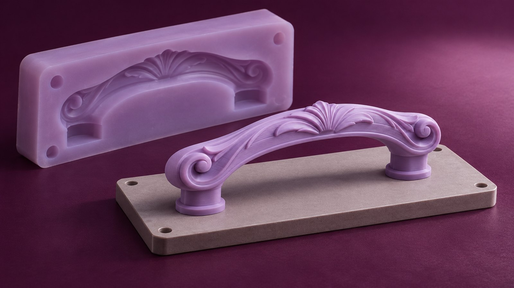
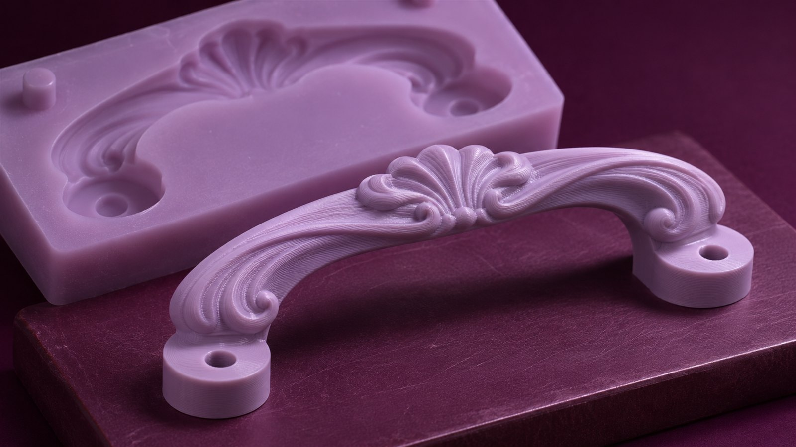
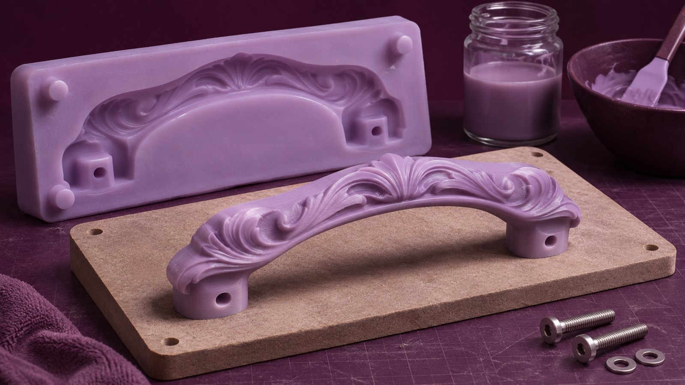

Мастер-модель декоративной ручки
Печатный оригинал для изготовления эластичной формы. Согласуем силуэт и поверхность до перехода к литью.

Две половины будущей формы показаны как схема. Наклон стенок и поднутрения обсуждаются с литейщиком до печати.
Половины разведены. Оригинал виден между частями будущей формы.
Исходный габарит мастер-модели — 110 × 42 × 28 мм. Это не размер готовой отливки.
Компенсация усадки, уклоны и литниковая система назначаются после выбора материала отливки и технологии формы.
Мелкий слой уменьшает выраженность ступенек. После печати поверхность шлифуют, грунтуют и проверяют совместимость покрытия с материалом формы.

Получить геометрию и проверить размеры.
Убрать слои, нанести совместимое покрытие.
Согласовать разъём и сделать пробную форму.
Проверить усадку, дефекты и извлечение детали.

Пример — концепт для портфолио. Размеры, масса и срок условные; отделка, форма и литьё в эту сумму не входят.
88 г × 10 ₽/г
Ориентир: 3 рабочих дня после согласования.Цена финишной подготовки — после пробы покрытия.
Это оригинал для изготовления формы, а не выжигаемая модель для прямой заливки металла. Для обсуждения нужны материал отливки, объём серии и требования к поверхности.
Изображения — художественная визуализация концепта. Геометрию и размеры уточняют по чертежам.